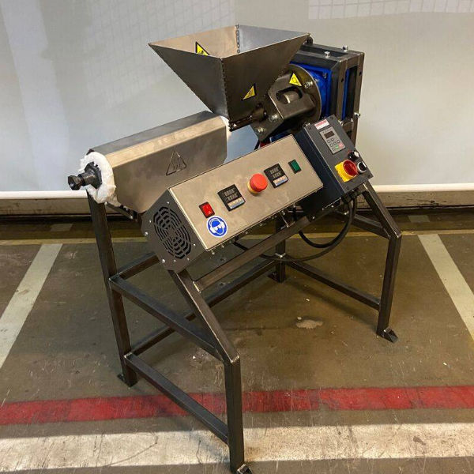

How We Innovate
Machines Built by Local Youth
Instead of importing expensive recycling equipment, we **empower young innovators in Katwe** to build our machines using locally available materials.
AI-Powered Waste Sorting
We integrate **simple AI models** to help sort different types of plastics efficiently, **reducing human error and increasing recycling efficiency**.

Recycling Beyond Yarn
Beyond producing yarn, we **explore other uses for plastic waste**, such as **craft materials, insulation, and even biodegradable plastic alternatives**.

Traditional Craft Meets Sustainability
We collaborate with **local artisans** to blend recycled fibers into **handwoven textiles, traditional Ugandan crafts, and modern fashion**.